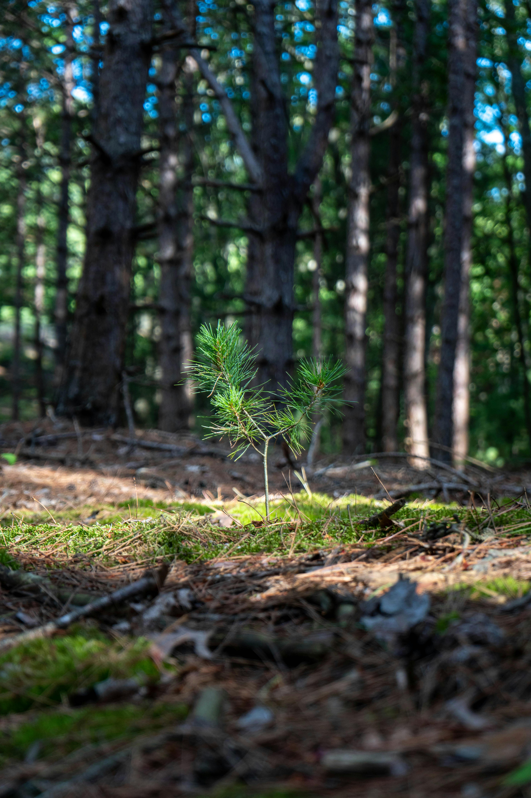

Monitoramento Ambiental por Satélite




Descubra riscos ambientais, áreas protegidas e a viabilidade de qualquer terreno antes da compra.
Conhecer a SoluçãoA análise ambiental de um terreno exige a consulta de diversas bases de dados, relatórios e plataformas especializadas. Esse processo costuma ser complexo, demorado e pouco acessível para grande parte da população.
Como consequência, muitas pessoas realizam investimentos sem conhecer riscos ambientais relevantes, como a incidência de queimadas, a existência de áreas protegidas ou restrições legais que podem impactar diretamente o uso da propriedade.
Estrutura da plataforma.
Design responsivo.
Interatividade e automação.
Dados ambientais e queimadas.
A Eco Fusion integra informações ambientais, territoriais e dados monitorados por satélites em uma única plataforma. Dessa forma, o usuário recebe análises rápidas, atualizadas e automatizadas, sem a necessidade de consultar diversas fontes separadamente.
O uso de monitoramento remoto permite acompanhar mudanças ambientais de forma contínua, aumentando a precisão das análises e oferecendo maior segurança na tomada de decisão.
A Eco Fusion auxilia compradores de terrenos, investidores e produtores rurais na avaliação de propriedades por meio da integração de informações ambientais e monitoramento por satélite.
A plataforma analisa fatores como risco de queimadas, características do bioma e áreas protegidas, gerando relatórios automáticos que apoiam decisões mais seguras, sustentáveis e fundamentadas em dados atualizados.